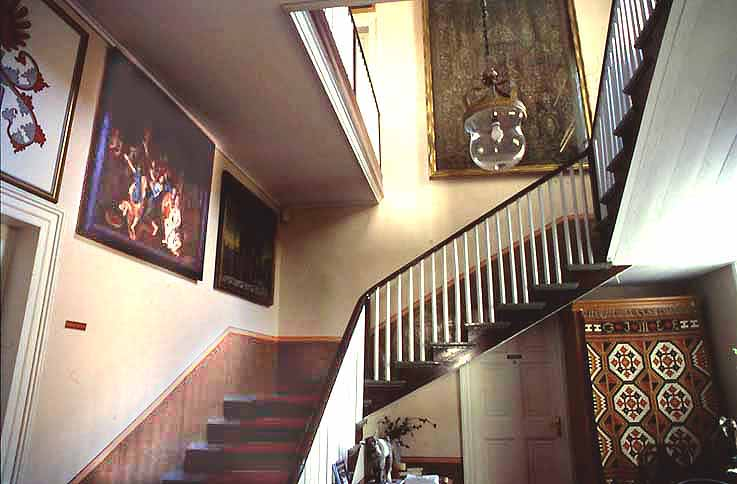
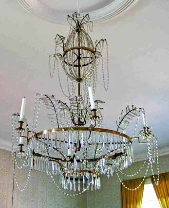
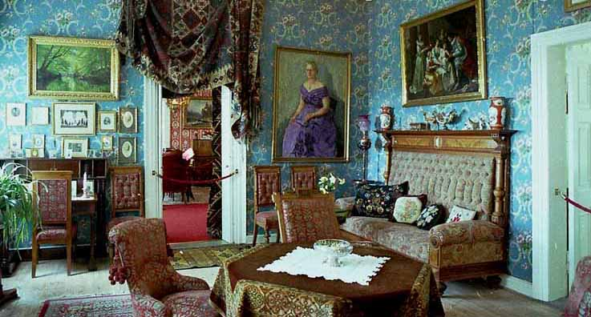
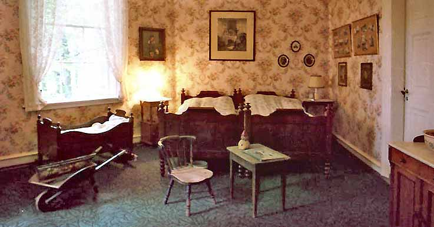

Vest-Agder Fylkesmuseum - Gimle Gård
Tekst: Torvald Slettebø med hjelp fra museumsdirektør Jan Henrik Munksgaard og konservator Kirsten K. Bertheau Nøklebye
Foto: Torvald Slettebø, Universitetet i Agder, Seniorsenteret
Allerede for to hundre år siden var det på moten med hytte på landet. Men den gang het det lystgård, og bare de aller rikeste og fornemste hadde råd, for det var noe til hytter.
Bernt Holm hadde arvet sin fars butikk i Kristiansand, og han gjorde det godt, som storkjøpmann og skipsreder. Han ble svært rik, og kjøpte opp landeiendommer i og utenfor byen, blant annet den som skulle bli Gimle gård.
Her bygde han sitt landsted, for å imponere, og dokumentere makt og rikdom. Fasaden mot sør. Utgang fra hagestuen til det som nå kalles Den gamle rosehagen, kom først mot slutten av 1800-årene.
Mot høyre ser vi vest-fløyen, som ble oppført først, i 1797. Det var egentlig mest selskapslokaler, og ikke beregnet som bolig. Familien bodde i byen, og reiste hit ut til lystgården til fest og ball, i sommerhalvåret, og også i ballsesongen ved juletider.
Foto: fra årbok 2002
Tegning av første byggetrinn, sett fra samme side, med inngang samme sted. Vi mangler ennå østfløyen med søylerekken. Det meste av øverste etasje ble dominert av den store festsalen, malerisalen. Det hørte også med: Overklassen skulle vise at den tilhørte den europeisk kulturkretsen.
Foto: fra årbok 2002
Det var åpent landskap omkring nybygget. Vi ser fra denne synsvinkelen bare malerisal-fløyen, men nå - i 1810 - har også vestfløyen stått ferdig noen år. Det var park-terrasser foran hovedbygget, og uthusene er også riktig plassert. Øvre Kongsgaard-bygningen og Oddernes kirke er kommet litt for nær, likeså Otra, i forgrunnen. Men før parken vokste til, var det faktisk fra altanen utsikt mot elva, og Øvre fergeleie helt til høyre.
Malerisal-fasaden mot elva, med til høyre det gamle akasietreet som Bernt Holm plantet.
Foto: fra årbok 2002
Søndagsutflukt i 1860-årene på de åpne markene. Huset til venstre står ennå i dag.
Utkikksplattformen ble bygget senere. Fra den ser vi ned på uthusene, som i dag rommer Agder Naturmuseum, med hovedinngangen midt i bildet.
Snur vi oss mot sjøen, ser vi bybebyggelse hele veien, der Bernt Holms jordbruksarealer lå. For Bernt Holm var ikke bare kjøpmann og malerisamler. Han var også, i tidens ånd, jordbruksreformator, og fikk endog medalje for fremragende jordbruk.
Fra hovedinngangen kommer vi inn i den eldste delen, vest-fløyen med den praktfulle oppgangen. Vi skimter Arenfeldtfamiliens våpenskjold øverst til venstre, og går opp trappene til -
- hallen. Den var ment å skulle imponere, med ruvende speil, kanskje fra Børsen i Kristiansand, og tungt hollandsk barokkskap fra 1600-tallet. Den store portalen danner skille mellom de to bygningsfløyene. I bakgrunnen titter vi inn i ballsalen, eller gulsalen, som Bernt Holm selv kalte den.
- Vi går inn i og malerisalen til høyre -
Den norske overklasse var, eller ville være, på høyde med tidens europeiske kultur. Og da hørte det med en malerisamling i en stormanns lystgård. Kanskje Bernt Holm som oppkomling overdrev litt, med flere hundre malerier, av heller ukritisk kvalitet.
Han tapetserte nesten veggene med bilder, og ikke bare i malerisalen. 650 bilder rakk han å samle. De fleste ble solgt etter hans tid, men det er rikelig igjen til salens vegger. Den praktfulle salen har brutte hjørner, og empiremøbler dekorert med intarsia.
England var Bernt Holds viktigste handelsforbindelse, og byggemotene kom derfra, med engelske skyvevinduer, som egentlig ikke egnet seg så godt for norsk klima. Nærmest: Speil med konsollbord mellom vinduene, også motekorrekt.
Med unntak av et presteportrett finnes det ikke norske malerier på Gimle. Omkring 1800 var det smått stell med norsk malerkunst, og det var i hvert fall ikke fornemt nok. Motivkretsen var europeisk: Religiøst eller historisk preget.
Mange av bildene var om ikke direkte kopier, så i det minste gjentakelser av kjente og populære fremstillinger. Flygelet til høyre er av nyere dato, for salen brukes i dag også til foredrag og intime konserter
"Tordenskiolds kiste" fra 1604 står i malerisalen, og gjør krav på å være om ikke Tordenskiolds, så i hvert fall eldre enn Kristiansand.
Fra flygelet i bakgrunnen går vi inn i den første selskapssalongen i nyempire stil. Disse rommene har gjennom husets levetid hatt vekslende funksjoner, og i perioder også vært soverom. Derfor har møbleringen endret seg tilsvarende. Det gjelder hele huset: Møbler er flyttet ut og inn, så bare lite av Bernt Holds opprinnelige interiør er blitt tilbake.
Men disse bildene i neste salong er Bernt Holm egne: Han var som barn av sin tid naturromantiker og Rousseau-begeistret. Men ennå var ikke norsk natur på moten. Det måtte være utenlandsk.
Familiegalleri på veggen inn mot første salong. Møblene i blandingsstil, biedermeier og nyrokokko.
Salongens motsatte vegg, med italienske minner. Dette var nemlig i en periode rommet til en av søstrene Arenfeldt som hadde bodd i Italia. Til høyre et fornemt spinett. Vi ser inn i ballsalen, og går dit.
Dette rommet er vel det mest autentisk innredede, med empiremøbler fra Bernt Holms tid: Konsollspeil mellom vinduene, skapsofaer og empirestoler langs veggene. Og ingen ting midt på gulvet, for der skulle det danses. I bakgrunnen åpne dører inn til gjeste-soverom. Vi går inn til høyre -
- og her er det ikke fullt så staselig. Det som kanskje forbauser oss mest i Gimle-stasen, er hvor primitive de hygieniske fasiliteter opprinnelig var. Men så var man jo heller ikke så renslige den gang.
Nærbilde av ballsalens sittegruppe, med empiremøbler antagelig snekret i København. Tidstypisk skapsofa, og dekorative urner og maleri.
Ovnen er speisalstøpt for "Gimle" ved Næs Jernværk, men er elles i typisk Napoleon-stil, formet som en egyptisk obelisk. Den står på en sandfylt kasse, som brannsikring. I norske trehus med fyring i alle rom var brannfaren overhengende.
Prakt i ballhallens tak: Louis seize lysekrone, som sies å være fra Venezia.
Bernt Holm selv, etter pastell fra 1805. Han ble født i Kristiansand i 1765, da byen hadde 3 000 innbyggere. Gimle lå langt ute på landet, og uten bro over elva. Han brukte vel ferge fra Øvre fergested.
Han kalte seg Generalkrigskommisær, men tittelen hadde han kjøpt. Han hadde ingen tilknytning til det militære, før han i 1818 skaffet seg en adelig major som svigersønn.
Ungdomsbilde av svigersønnen, major Julius Fredrik Arenfeldt, sønn av den danske adelsmann Christian Arenfeldt, general og kommandant i Kristiansand. Den unge majoren giftet seg med Bernts datter Petronelle. Og dermed var Bernt Holm ikke bare rik, men fin. Slekten var blitt adelig.

Vi er i havestuen, møblert i en blandingsstil vi gjerne kaller historisme. Ytterst mot vinduet henger adelsmannen, ved siden av sin svigerfar. Helfigurbildet ved ovnen er av Christian Arenfeldt, løytnantens sønn, oppkalt etter sin fine bestefar. Han overtok Gimle i 1876, etter sine tre søstre. Inntil da hadde han bodd på Eg, en annen av Bernt Holms mange eiendommer.
Til venstre Christian Arenfeldts datter Ingerta, gift med oberstløytnant Omdal, over pianoet. Dermed har vi hele slektslinjen, fram til siste eier, nemlig deres datter Othilie Louise Arenfeldt Omdal, i dagligtale Titti.
Oberstløytnanten med det mektige skjegg, og omkranset av frodige tapeter og draperier.
Hans kone Ingerta Arenfeldt Omdal er malt av Marcelius Førland, som har oppfattet henne som en mektig dame. Hun er altså mor til -
Dette var Tittis dagligstue, hvor hun egentlig bodde. Det meste av huset ellers sto ubrukt, uoppvarmet, men her var det trivelig. TV-en i hjørnet er diskret tilpasset biedermeier/nyrokokko-interiøret, og ser ut som et pent skap. Vi ser inn i farens bibliotek/kontor -
- for eiendommen måtte drives økonomisk, som gårdsbruk. Selv om jo det meste av inntektene kom gjennom salg og utparsellering av jordene til boligområder.

Bernt Holm "samlet" kultur: Malerier, men også bøker i mengder, som han neppe hadde tid til å lese. Fra auksjonen i 1835 ble det solgt ut 3 000 bind. Men ennå er det tilbake nok til å fylle mange hyller på Gimle.
Vi ser fra biblioteket gjennom tre åpne dører helt inn mot spisesalen.
Til daglig ble nok måltidene inntatt i den intime dagligstuen. Spisesalen her var mer for gjester og høytideligere anledninger. Og ved de store festene, som ennå forekom i Tittis tid, ble det dekket i annen etasje, i ballsalen eller i malerisalen. Som i riktig gamle dager.

Det er gedigent dekketøy, med porselen og sølv, og tunge stilmøbler.
Lysekronen i taket er nok en nyere anskaffelse, men innkjøpt med følelse for staselig stil. Når det har vært så mye utskifting av inventar, henger det også sammen med at Arenfeld-slekten arvet familiegodset Sæbø Gaard i Danmark, og det ble en viss utveksling av møbler og innbo mellom Gimle og Sæbø.
Ikke bare pynt. Noe er gaver ved festlige anledninger, men det er også virkelige premiebegere: Gården drev i mellomkrigstiden sølvrev-avl, og vant priser på utstillinger.
Husholderskens stue. I Bernt Holms velmaktsdager var tjenerskapet stort. Noen bodde i kjelleren.
Kjøkkenet utenfor spisesalen. Det ble bygget i 1790-årene. Igjen en levende og kontinuerlig utvikling: I korridoren bakerst står moderne kjøleskap, mens vi nærmest har en enkel hverdagsspiseplass.

Og to komfyrer, en vedfyrt og en elektrisk. De var begge var i bruk så lenge Titti regjerte. Hun foretrakk den vedfyrte. Den kokte best, sa hun.
Det var også fra gammelt et grovkjøkken i kjelleren. Det står ennå.
Soverommet til Tittis foreldre, Ingerta og Valentin Omdal. Det var generasjoner som virkelig bodde her, og hadde barn, som lå i vogge. Men om inventaret noen gang har stått akkurat som her, vet vi vel ikke.

Foto: fra årbok 2002
Mens de tre ugifte søstrene Arenfeldt bodde på Gimle, leide de i 1860-årene ut det meste av bygningen til en annen fornem familie, nemlig general Grams familie. Her var det den gang fire unge ugifte døtre, hvorav den ene skrev mengder av brev, som forteller oss om livet, og selskapslivet, på Gimle i de dager.
Foto: fra Vest-Agder Fylkesmuseums bildearkiv
Stor stall, og i Bernt Holms velmaktsdager mange hester. Detter er kanskje omkring 1900 eller senere, i fotografiets barndom: Meget langsom film, så urolige hestehoder er blitt uskarpe.
Foto: fra Vest-Agder Fylkesmuseums bildearkiv
Familiesamling, kanskje besøk fra Sæbø Gaard. Christian Arenfeldt til høyre. Helt til venstre, med kjennelig mektig skjegg, oberstløytnant Omdal, med sin datter Titti i hvit hatt midtveis mellom far og bestefar.
Foto: fra Vest-Agder Fylkesmuseums bildearkiv
Christian Arenfeldt i sin residens på Gimle. Inventar og bilder har vekslet, men vi kjenner igjen stamfar Bernt Holm øverst til høyre.
Titti Arenfeldt Omdal overtok en gård med stram økonomi. Det måtte skaffes inntekter, i tillegg til det som kom inn ved eiendomsalg og byksling. Hun startet rabarbravinproduksjon.
"Vinen er norsk, sund og liflig."
Tappemaskinen i kjelleren. Underetasjen er stor og rommelig, og kunne nok egne seg som vinkjeller.
Rester som er blitt stående igjen på ei kjellerhylle. Neppe fineste årgang.
Bernt Holm ville gledet seg over bøkeparken. En stor og vakker park hørte med til et gods. Og Gimle-parken med arboretet er blant de vakreste.

Han ville også gledet seg over velholdte uthusbygninger, og ridehallen, til høyre. Selv om biler og gressklippere har overtatt etter hestene.
Og rosehagene. De er blitt flottere en selv ambisiøse Bernt Holm kunne ha tenkt seg.